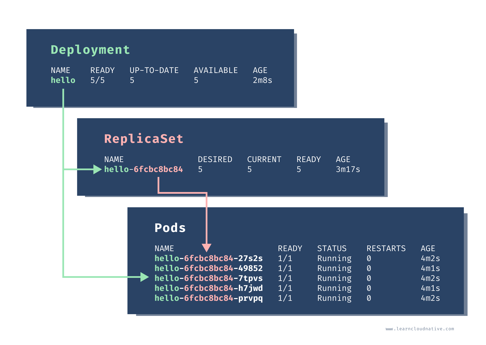

Kubernetes Resources
The Kubernetes API defines many objects called resources, such as namespaces, pods, services, secrets, config maps, etc. you can also define your custom resources using the custom resource definition or CRD
kubectl api-resources
This command will list all defined resources - there will be lot of them , Every Kubernetes resource has an apiVersion and kind fields to describe which version of the Kubernetes API you’re using when creating the resource (for example, apps/v1) and what kind of a resource you are creating (for example, Deployment, Pod, Service, etc.).
Labels and selectors
You can use labels (key/value pairs) to label resources in Kubernetes. They are used to organize, query, and select objects and attach identifying metadata to them. The labels have two parts: the key name and the value. The key name can have an optional prefix and the name, separated by a slash (/). The startkuberenetes.com portion in the figure is the optional prefix, and the key name is app-name. The prefix, if specified, must be a series of DNS labels separated by dots (.). It can’t be longer than 253 characters.

Selector
Selectors are used to query for a set of Kubernetes resources. For example, you could use a selector to identify all Kubernetes cluster objects with a label env set to staging-us-west. You could write that selector as env = staging-us-west. This selector is called an equality-based selector
The second type of selector is called set-based selectors. These selectors allow filtering label keys based on a set of values. The following three operators are supported: in, notin, and exists. Here’s
an example:
env in (staging-us-west,staging-us-east)
owner notin (ricky, peter)
department
department!
Labeling resources is essential, so make sure you take your time to decide on the core set of labels you will use in your organization. Setting labels on all resources make it easier to do bulk operations against them later on.
Kubernetes provides a list of recommended labels that share a common prefix app.kubernetes.io:
| Name | Value | Description |
|---|---|---|
| app.kubernetes.io/name | my-app | Application name |
| app.kubernetes.io/instance | my-app-1122233 | Identifying instance of the application |
| app.kubernetes.io/version | 1.2.3 | Application version |
| app.kubernetes.io/component | website | The name of the component |
| app.kubernetes.io/part-of | carts | The name of the higher-level application this component is part of |
| app.kubernetes.io/managed-by | helm | The tools used for managing the application |
Additionally, you could create an maintain a list of your own labels: • Project ID (carts-project-123) • Owner (Ricky, Peter, or team-a, team-b, ...) • Environment (dev, test, staging, prod) • Release identifer (release-1.0.0`) • Tier (backend, frontend)
Annotations
Annotations are similar to labels as they also add metadata to Kubernetes objects. However, you don’t use annotations for identifying and selecting objects. Examples would be information needed for debugging, emails, or contact information of the on-call engineering team, port numbers or URL paths used by monitoring or logging systems , Similar to labels, annotations are key/value pairs. The key name has two parts and the same rules apply as with the label key names. However, the annotation values can be both structured or unstructured and can include characters that are not valid in the labels
Working with Pods
Pods are probably one of the most common resources in Kubernetes. They are a collection of one or more containers. The containers within the pod share the same network and storage. This means that any containers within the same pod can talk to each other through localhost.
Pods are designed to be ephemeral, which means that they last for a very short time. Pods can get rescheduled to run on different nodes at any time. This means any time your pod is restarted, your containers will be restarted as well
When created, each Pod gets assigned a unique IP address. The containers inside your Pod can listen to different ports. To access your containers, you can use the Pods' IP address. Using the example from the above figure, you could run curl 10.1.0.1:3000 to talk to the one container and curl 10.1.0.1:5000 to talk to the other container. However, if you wanted to talk between containers - for example, calling the top container from the bottom one, you could use http://localhost:3000.
If your Pod restarts, it will get a different IP address. Therefore, you cannot rely on the IP address. Talking to your Pods directly by the IP is not the right way to go. An abstraction called a Kubernetes Service is what you can to communicate with your Pods. A Kubernetes Service gives you a stable IP address and DNS name.
Scaling Pods

All containers within the Pod get scaled together. The figure below shows how scaling from a single Pod to four Pods would look like. Note that you cannot scale individual containers within the Pods. The Pod is the unit of scale, which means that whenever you scale a Pod, you will scale all containers inside the Pod as well. econd, running a stateful workload in Kubernetes, such as a database, differs from running stateless workloads. For example, you need to ensure that data is persistent between Pod restarts and that the restarted Pods have the same network identity. You can use resources like persistent volumes and stateful sets to accomplish this. We will discuss running stateful workloads in Kubernetes in Stateful Workloads section. Creating Pods Usually, you shouldn’t be creating Pods manually. You can do it, but you really should not. The reason being is that if the Pod crashes or if it gets deleted, it will be gone forever. That said, throughout this book, we will be creating Pods directly for the sake of simplicity and purposes of learning and explaining different concepts. However, if you’re planning to run your applications inside Kubernetes, make sure you aren’t creating Pods manually. Let’s look at how a single Pod can be defined using YAML.
Creating Pods
Usually, you shouldn't be creating Pods manually. You can do it, but you really should not. The reason being is that if the pod crashes or if it gets deleted, it will be gone forever. Let's look at how a single pod can be defined using YAML.
apiVersion: v1
kind: Pod
metadata:
name: hello-pod
labels:
app: hello
spec:
containers:
- name: hello-container
image: busybox
command: ['sh', '-c', 'echo Hello from my container! && sleep 3600']
In the first couple of lines, we define the kind of resource (Pod) and the metadata. The metadata includes the name of our Pod (hello-pod) and a set of labels that are simple key-value pairs.
In the spec section, we are describing how the Pod should look. We will have a single container inside this Pod, called hello-container, and it will run the image called busybox. When the container starts, it executes the command defined in the command field. To create the Pod, you can save the above YAML to a file called pod.yaml. Then, you can use Kubernetes CLI (kubectl) to create the Pod:
$ kubectl apply -f pod.yaml
pod/hello-pod created.
Managing Pods with ReplicaSets
The job of a ReplicaSet is to maintain a stable number of Pod copies or replicas. The ReplicaSet controller guarantees that a specified number of identical Pods is running at all times. The replica count is controlled by the replicas field in the resource definition. If you start with a single Pod and you want to scale to 5 Pods, the ReplicaSet controller uses that current state (one pod) in the cluster and goes and creates four more Pods to meet the desired state (5 Pods). The ReplicaSet also keeps an eye on the Pods, so if you delete one or scale it up or down, it will do the necessary to meet the desired number of replicas. To create the Pods, ReplicaSet uses the Pod template that's part of the resource definition.
apiVersion: apps/v1
kind: ReplicaSet
metadata:
name: hello
labels:
app.kubernetes.io/name: hello
spec:
replicas: 5 ### Nombre de pods ( Replicas )
selector:
matchLabels:
app: hello ### Qu'elle pod observé
template: ### Les templates a utilisé
metadata:
labels:
app.kubernetes.io/name: hello
spec:
containers:
- name: hello-container
image: busybox
command: ['sh', '-c', 'echo Hello from my container! && sleep 3600']
Every Pod that's created by a ReplicaSet can be identified by the metadata.ownerReferences field. This field specifies which ReplicaSet owns the Pod. If any of the Pods owned by the ReplicaSet is deleted, the ReplicaSet nows about it and acts accordingly (i.e. re-creates the Pod) The ReplicaSet also uses the selector object and matchLabel to check for any new Pods that it might own. If there's a new Pod that matches the selector labels the ReplicaSet and it doesn't have an owner reference or the owner is not a controller (i.e. if we manually create a Pod), the ReplicaSet will take it over and start controlling it.
You can also list the Pods by their labels. For example, if you run kubectl get po -l=app=hello, you will get all Pods that have app=hello label set. This, at the moment, is the same 5 Pods we created. Let's also look at the owner reference field. We can use the -o yaml flag to get the YAML representation of any object in Kubernetes. Once we get the YAML, we will search for the ownerReferences string:
kubectl get po hello-dwx89 -o yaml | grep -A5 ownerReferences
...
ownerReferences:
- apiVersion: apps/v1
blockOwnerDeletion: true
controller: true
kind: ReplicaSet
name: hello
In the ownerReferences, the name of the owner is set to hello, and the kind is set to ReplicaSet. This is the ReplicaSet that owns the Pod
Zero-downtime updates?
I mentioned zero-downtime deployments and updates earlier. How can that be done using a replica set? Well, it can't be done. At least not in a zero-downtime manner. Let's say we want to change the Docker image used in the original replica set from busybox to busybox:1.31.1. We could use kubectl edit rs hello to open the replica set YAML in the editor, then update the image value. Once you save the changes - nothing will happen. Five Pods will still keep running as if nothing has happened. Let's check the image used by one of the Pods:
$ kubectl describe po hello-fchvr | grep image
Normal Pulling 14m kubelet, docker-desktop Pulling image "busybox"
Normal Pulled 13m kubelet, docker-desktop Successfully pulled image "busybox"
Notice it's referencing the busybox image, but there's no sign of the busybox:1.31.1 anywhere. Let's see what happens if we delete this same Pod:
$ kubectl delete po hello-fchvr
pod "hello-fchvr" deleted.
From the previous test we did, we already know that ReplicaSet will bring up a new Pod (hello-q8fnl in our case) to match the desired replica count. If we run describe against the new Pod that came up, you will notice how the image is changed this time:
$ kubectl describe po hello-q8fnl | grep image
Normal Pulling 74s kubelet, docker-desktop Pulling image "busybox:1.31"
Normal Pulled 73s kubelet, docker-desktop Successfully pulled image "busybox:1.31"
Similar would happen if we delete the other Pods that are still using the old image (busybox).
The ReplicaSet would start new Pods and this time the Pods would use the new image busybox:1.31.1. There is another resource that can be used to manage the ReplicaSets and allows us to update Pods in a controlled manner. Upon changing the image name it can start Pods using the new image names in a controlled manner. This resource is called a Deployment. To delete all Pods you need to delete the ReplicaSet by running: kubectl delete rs hello. rs is the short name for replicaset. If you list the Pods (kubectl get po) right after you issued the delete command you will see the Pods being terminated:
NAME READY STATUS RESTARTS AGE
hello-fchvr 1/1 Terminating 0 18m
hello-fl6hd 1/1 Terminating 0 18m
hello-n667q 1/1 Terminating 0 18m
hello-rftkf 1/1 Terminating 0 18m
hello-vctkh 1/1 Terminating 0 7m39s
Once replica set terminates all Pods, they will be gone, and so will be the ReplicaSet.
Creating Deployments
A deployment resource is a wrapper around the ReplicaSet that allows doing controlled updates to your Pods. For example, if you want to update image names for all Pods, you can edit the Pod template, and the deployment controller will re-create Pods with the new image.
....
kind: Deployment
....
Why the --record flag? Using this flag, we are telling Kubernetes to store the command we executed in the annotation called kubernetes.io/change-cause. Record flag is useful to track the changes or commands that you executed when the deployment was updated. You will see this in action later on when we do rollouts.
To list all deployments, we can use the get command:
$ kubectl get deployment
NAME READY UP-TO-DATE AVAILABLE AGE
hello 5/5 5 5 2m8s
The output is the same as when we were listing the ReplicaSets. When we create the deployment, controller also creates a ReplicaSet:
$ kubectl get rs
NAME DESIRED CURRENT READY AGE
hello-6fcbc8bc84 5 5 5 3m17s
Notice how the ReplicaSet name has the random string at the end. Finally, let's list the Pods:
$ kubectl get po
NAME READY STATUS RESTARTS AGE
hello-6fcbc8bc84-27s2s 1/1 Running 0 4m2s
hello-6fcbc8bc84-49852 1/1 Running 0 4m1s
hello-6fcbc8bc84-7tpvs 1/1 Running 0 4m2s
hello-6fcbc8bc84-h7jwd 1/1 Running 0 4m1s
hello-6fcbc8bc84-prvpq 1/1 Running 0 4m2s
When we create a ReplicaSet previously, the Pods were named like this: hello-fchvr. However, this time, the Pod names are a bit longer - hello-6fcbc8bc84-27s2s. The middle random section in the name 6fcbc8bc84 corresponds to the random section of the ReplicaSet name and the Pod names are created by combining the deployment name, ReplicaSet name and a random string.

How to scale the Pods up or down?
There's a handy command in Kubernetes CLI called scale. Using this command we can scale up (or down) the number of Pods controlled by the Deployment or a ReplicaSet. Let's scale the Pods down to 3 replicas:
$ kubectl scale deployment hello --replicas=3
deployment.apps/hello scaled
$ kubectl get po
NAME READY STATUS RESTARTS AGE
hello-6fcbc8bc84-49852 1/1 Running 0 48m
hello-6fcbc8bc84-7tpvs 1/1 Running 0 48m
hello-6fcbc8bc84-h7jwd 1/1 Running 0 48m
Similarly, we can increase the number of replicas back to five, and ReplicaSet will create the Pods.
$ kubectl scale deployment hello --replicas=5
deployment.apps/hello scaled
$ kubectl get po
NAME READY STATUS RESTARTS AGE
hello-6fcbc8bc84-49852 1/1 Running 0 49m
hello-6fcbc8bc84-7tpvs 1/1 Running 0 49m
hello-6fcbc8bc84-h7jwd 1/1 Running 0 49m
hello-6fcbc8bc84-kmmzh 1/1 Running 0 6s
hello-6fcbc8bc84-wfh8c 1/1 Running 0 6s